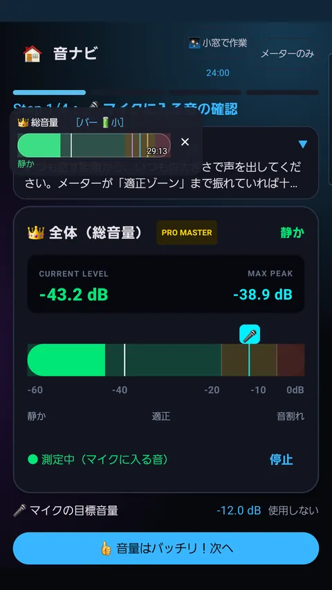
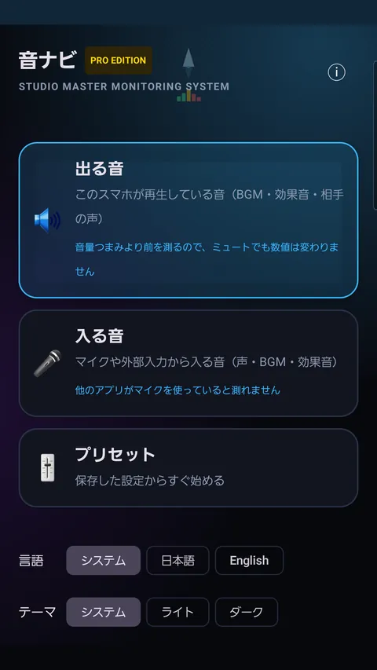
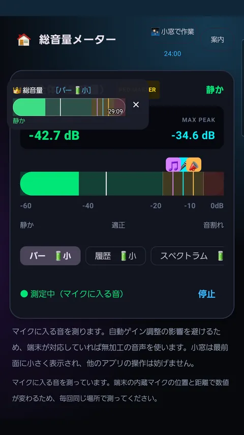
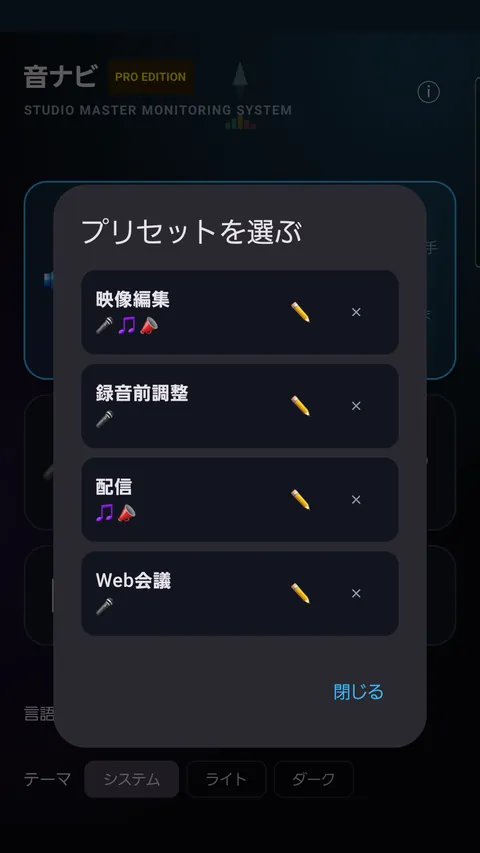
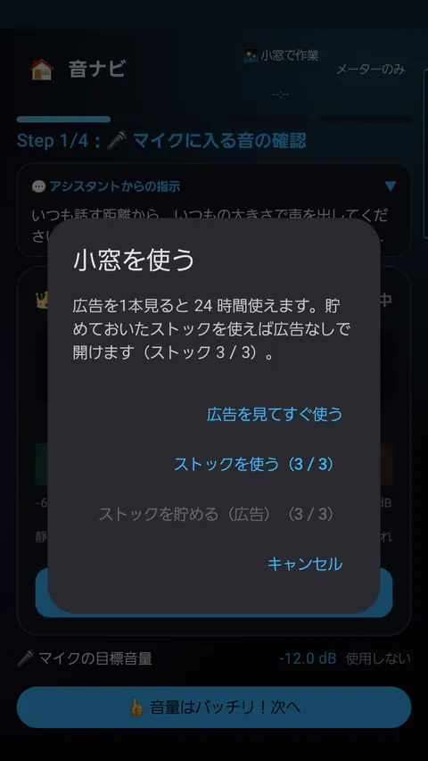

音ナビ
配信・録音の音量バランス
Google Play で配信中
声・BGM・効果音を1つずつ測って音量バランスを合わせるメーター。次からは目標線に合わせるだけです。





できること
出る音を直接測る
端末が再生している音を測るので、音量つまみやミュートに左右されません。
入る音も測れる
マイクやミキサー・オーディオインターフェース経由の音にも対応。
ステップ案内
声 → BGM → 効果音 → 全体の順に、何を鳴らすかを案内します。
目標線とプリセット
良い音量を目標に登録。映像編集・配信・Web会議などを収録。
小窓で見続ける
他のアプリを操作しながら、最前面の小窓でメーターを見られます。
6種類のメーター
バー・履歴・スペクトラム・低中高・波形・LED/VU。
使い方
- 測る音（出る音／入る音）を選ぶ
- 声・BGM・効果音を1つずつ鳴らす
- 良い音量を目標として登録
データと注意
- 音声は端末の中だけで処理し、送信も録音ファイルの保存もしません。
- 小窓は広告を1本見ると24時間使えます。本体のメーターはいつでも制限なく使えます。
- 通話の音声は測れません（Android の仕様）。